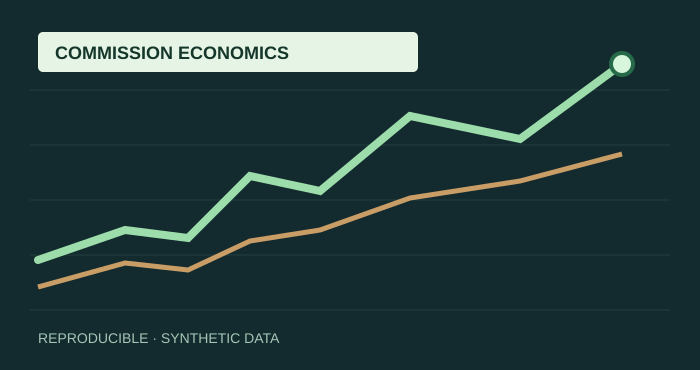
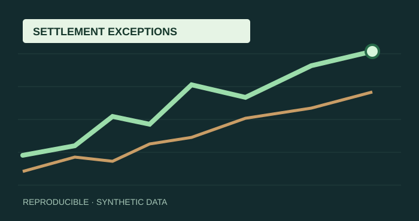

PROJECT / 001Reproducible case study
PROJECT / 001Reproducible case studyFinancial Fraud Detection & Risk Intelligence
Fraud scoring with chronological evaluation, baseline rules and investigator-oriented metrics.
Fraud AnalyticsPythonMachine Learning
Explore case study ↗I'm Godspower Johnson, a finance professional, data and business analyst, and fraud analytics specialist with over five years of experience in data and financial analysis. I turn complex financial and operational data into decisions, controls and measurable business insights.
All figures shown here use synthetic records. No confidential or third-party transaction data is included.
I'm Godspower Johnson, a finance professional, data and business analyst, and fraud expert with over five years of experience in data and financial analysis. I focus on helping teams understand financial performance, improve processes, manage risks and make evidence-based decisions.
My experience spans financial reporting and performance analysis, business requirements and process improvement, payment and settlement reconciliation, commission profitability, and fraud risk identification and investigation. I examine both the numbers and the processes behind them to find exceptions, weaknesses and opportunities for better controls.
I use SQL, Python, Power BI and Excel to clean and model data, investigate unusual patterns, assess financial outcomes and explain business implications. My approach combines analytical discipline with practical knowledge of finance, business operations and fraud prevention. Portfolio case studies use synthetic data and do not claim confidential business results.
Five complete analytical demonstrations with synthetic datasets, reproducible Python scripts, SQL analysis and Power BI-ready measures. Each case study includes limitations and practical next steps.
PROJECT / 001Reproducible case studyFraud scoring with chronological evaluation, baseline rules and investigator-oriented metrics.

PROJECT / 002Reproducible case studyStress-test agent incentives, costs and payout-to-GGR ratios by product.
 PROJECT / 003Reproducible case study
PROJECT / 003Reproducible case studyForecast revenue, EBITDA and liquidity with holdout testing and scenario analysis.

PROJECT / 004Reproducible case studyReconcile payment-provider events against bank credits and triage exceptions.
 PROJECT / 005Reproducible case study
PROJECT / 005Reproducible case studyIdentify workflow bottlenecks, service targets and potential improvements.
Filter the sample data, inspect the key ratios and see which operational questions the analysis answers.
SYNTHETIC DATA Figures are fictional and for analytical demonstration only.
Monthly matched transaction rate
Share of all transactions
From financial modelling and requirements analysis to fraud investigations and reporting, each skill helps solve a real business problem.
Joins, reconciliations, CTEs, aggregations, dimensional modelling and validation queries.
Pandas-based data cleaning, anomaly investigation, reproducible metrics and analysis scripts.
Metric definitions, financial dashboards, drill-down thinking and operational performance reporting.
Financial models, profitability analysis, reconciliations, performance metrics and management reporting.
Business requirements, process mapping, root-cause analysis, performance gaps and actionable recommendations.
Suspicious-pattern identification, transaction monitoring, exception investigation and control effectiveness.
Interested in financial analytics, business analysis, fraud risk or data-driven financial reporting? Explore my work and connect with me.
Contact channels can be added before publication in assets/config.js.